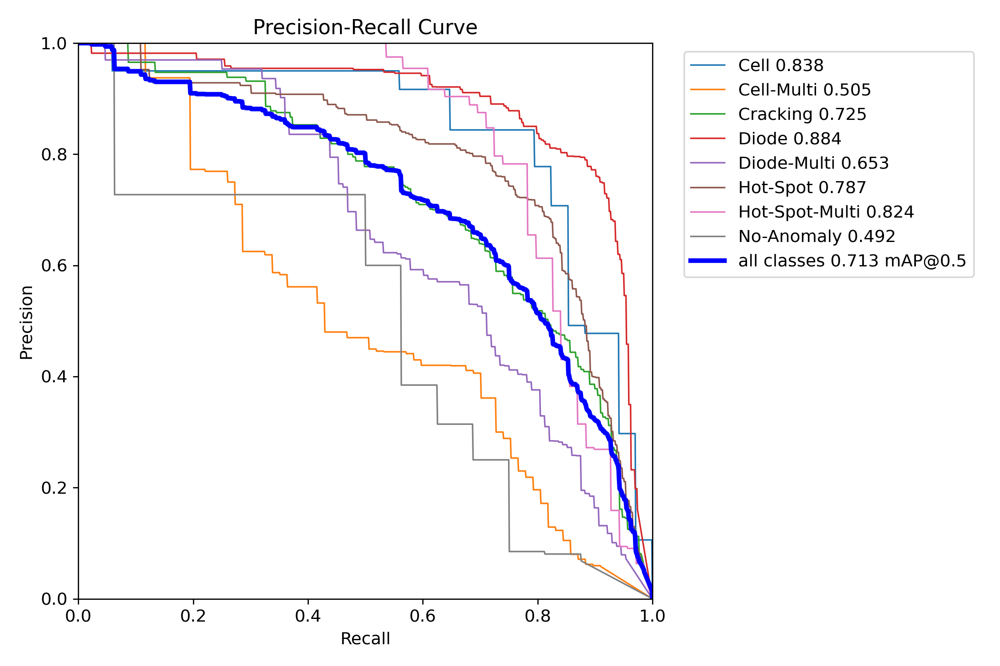
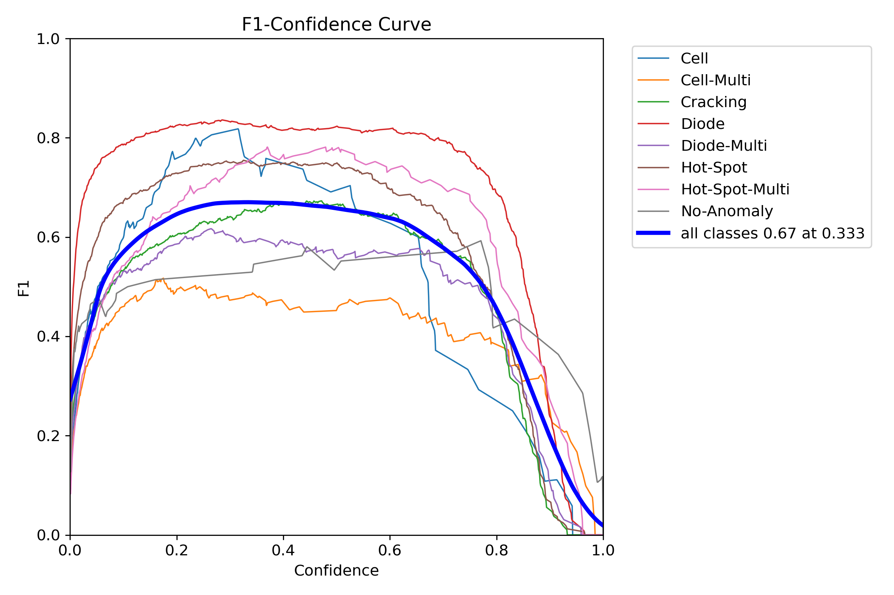
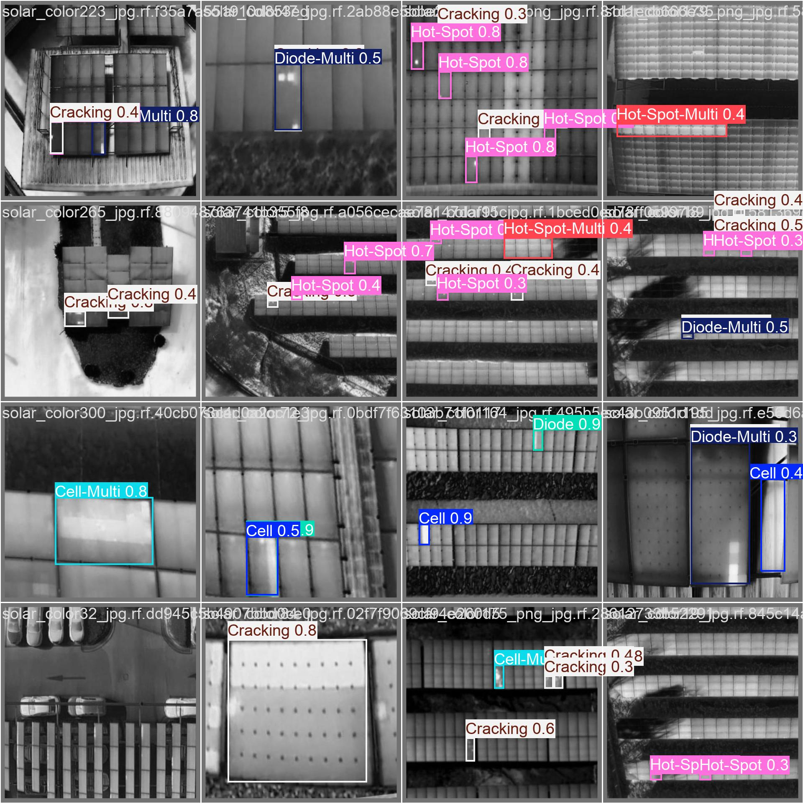
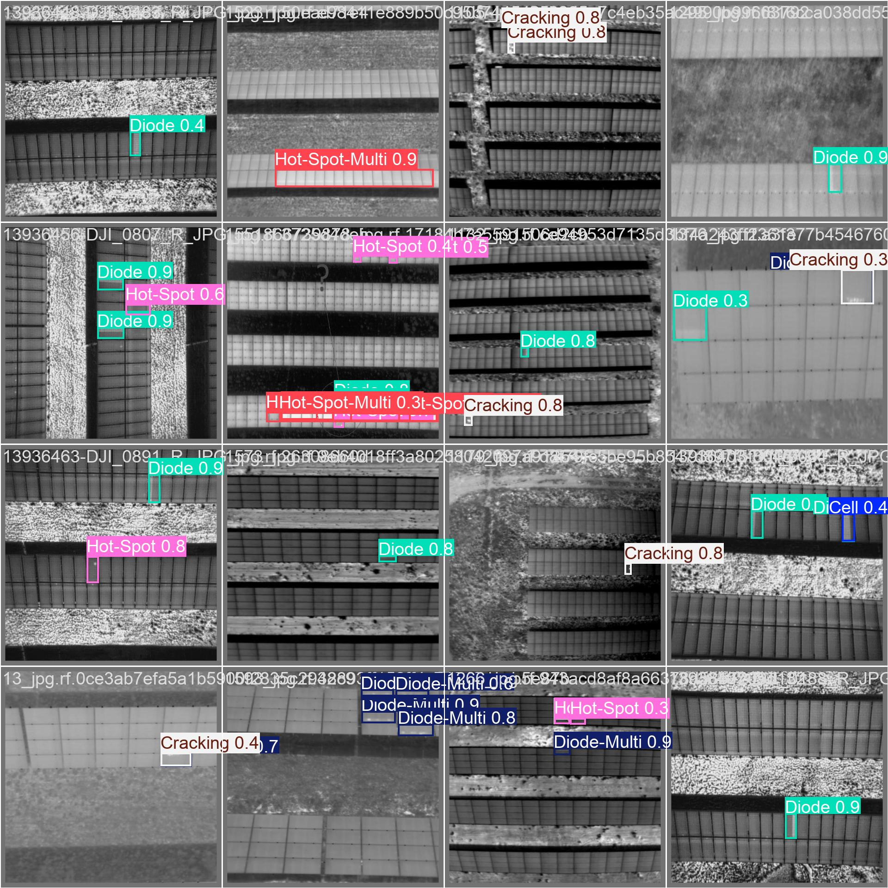
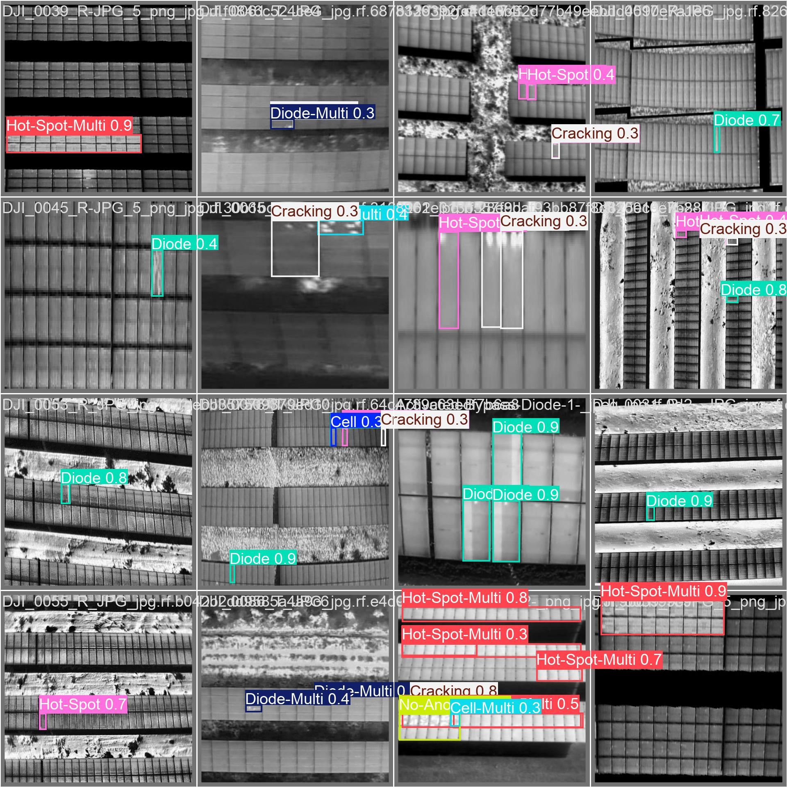

Leveraging YOLOv11 to detect 12 classes of solar module anomalies with 71.3% mAP at real-time drone speeds.
Solar farms are expanding rapidly, but manual inspection is inefficient. Identifying critical faults like Hotspots (fire risk) and Diode Failures (power loss) typically requires hours of manual review per acre.
"Manual inspection is the bottleneck in renewable energy maintenance."
Drone IR Imagery
Object Detection & Classification
Fault Locations & Types

Shows the trade-off between precision and recall. High area under the curve (0.713 mAP@0.5) indicates the model effectively minimizes false positives while maintaining detection capability.

The optimal F1 score is achieved at a confidence threshold of approx 0.333. This informs our deployment strategy to balance missed detections against false alarms.
Strong Performance: Diode (0.88), Cell (0.83), Hot-Spot (0.79).
Review Needed: No-Anomaly (0.49) - Model is conservative/paranoid (safer for inspections).
The following images demonstrate the model's ability to localize multiple concurrent faults on a single panel string. Note the accurate bounding boxes around "Diode" and "Hot-Spot-Multi".

Batch 0: Complex Multi-Faults

Batch 1: Diode & Cracking

Batch 2: High Confidence Hot-Spots
Transitioning to AI-driven inspection reduces analysis time by orders of magnitude. While a human inspector needs minutes to review complex thermal imagery, YOLOv11 processes frames in milliseconds.